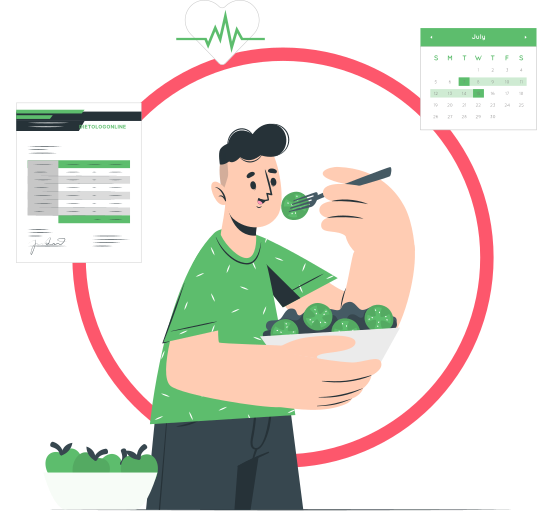

Кращий результат
Правильне харчування дійсно працює
При неправильному харчуванні спорт може бути шкідливим для здоров’я. І навпаки – збалансований раціон, розроблений з урахування індивідуальних особливостей людини, допомагає не лише схуднути і отримати чудове тіло, а й досягти неймовірних результатів у спорті
Обрати дієтолога
Як це працює ?
Огляд вашої ситуації та цілей
- Ми уважно вивчимо Вашу харчову поведінку, спосіб життя, проблеми зі здоров'ям та цілі
- Ми приділяємо увагу всім факторам здоров'я, включаючи можливий гормональний дисбаланс та індивідуальну непереносимість продуктів харчування
Оберіть ідеального онлайн дієтолога
- Оберіть персонального дієтолога зі списку, сформованого на основі Вашої інформації з кроку 1
- Ви зможете ознайомитися з досвідом, включаючи професійний стаж, освіту, професійні підходи та відгуки
- Ідеальний дієтолог постійно на зв'язку
Отримуйте підтримку та мотивацію
- На основі Ваших уподобань, результатів за підсумками тижня та потреб здоров'я план харчування оновлюватиметься щотижня
- Дієтолог завжди готовий скоригувати ваше меню у разі, якщо ви відчуваєте нестачу в деяких продуктах харчування або просто потяг до солодкого